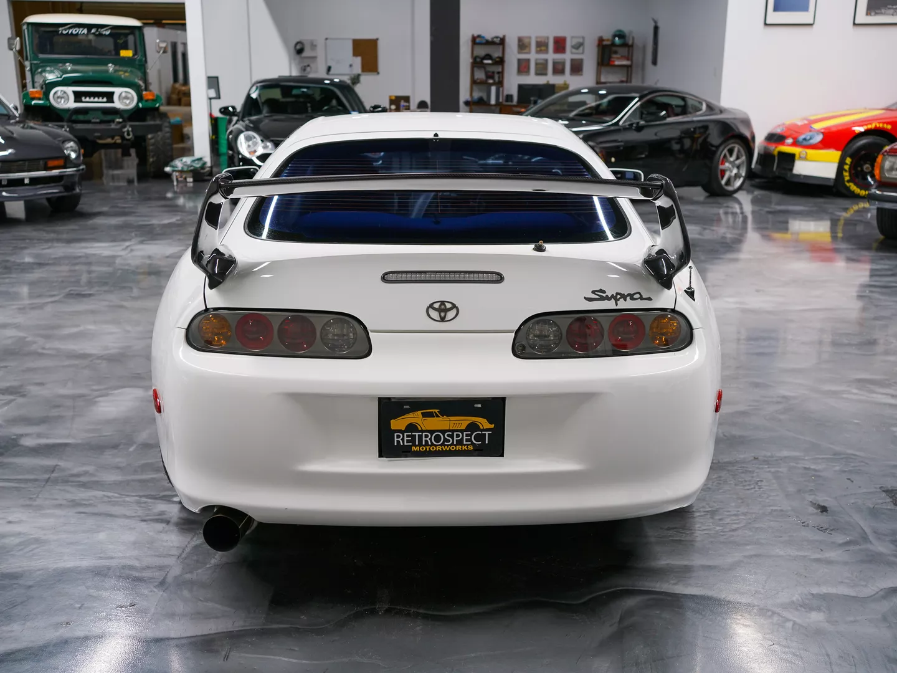
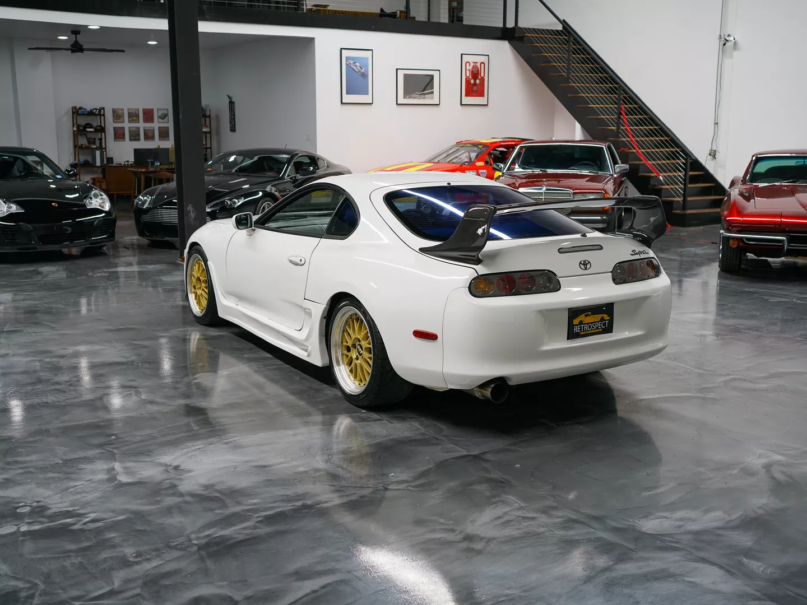
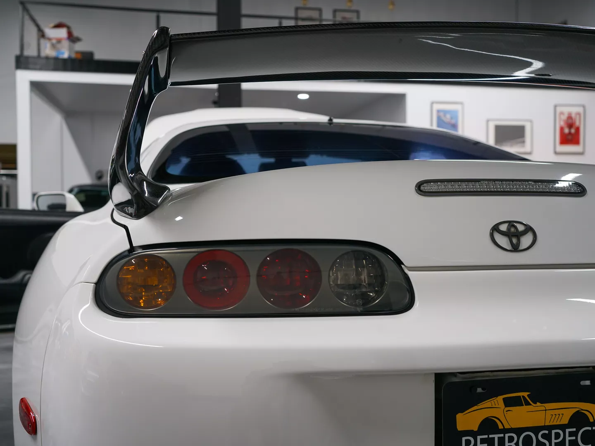
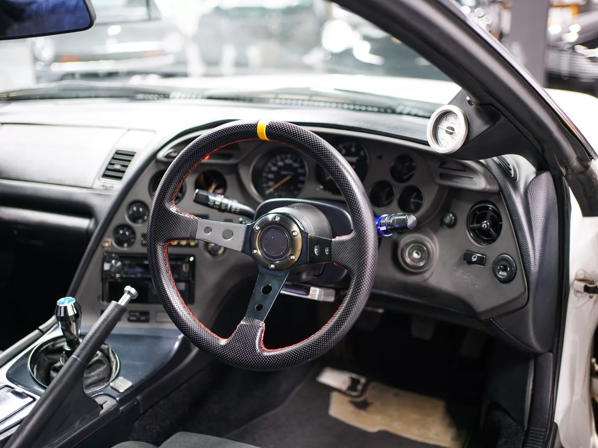
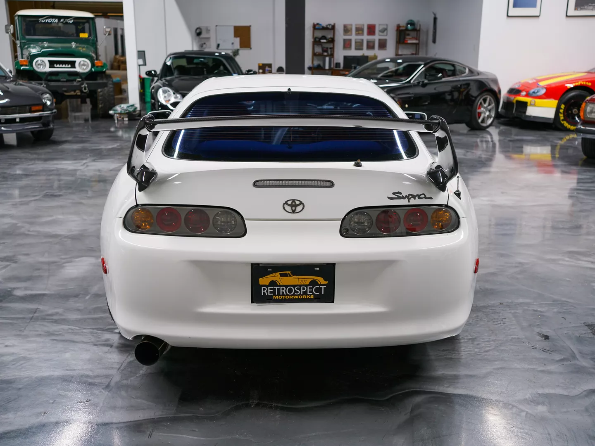
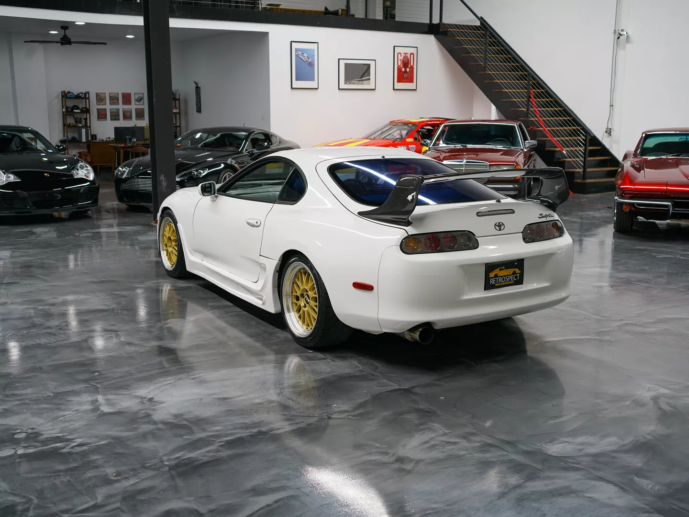
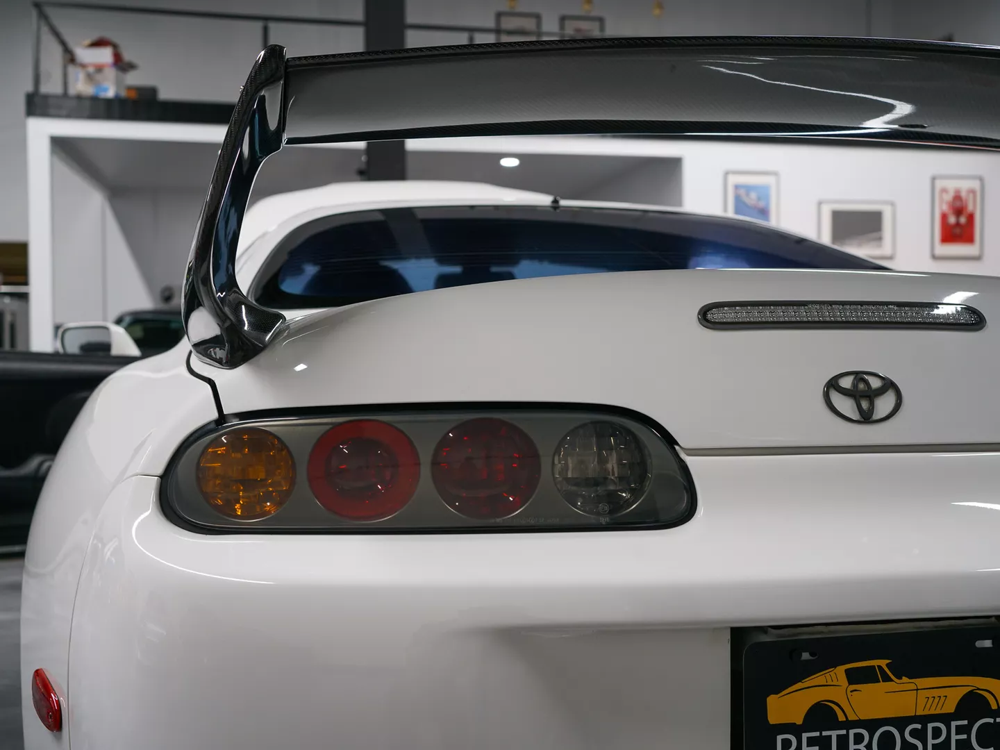
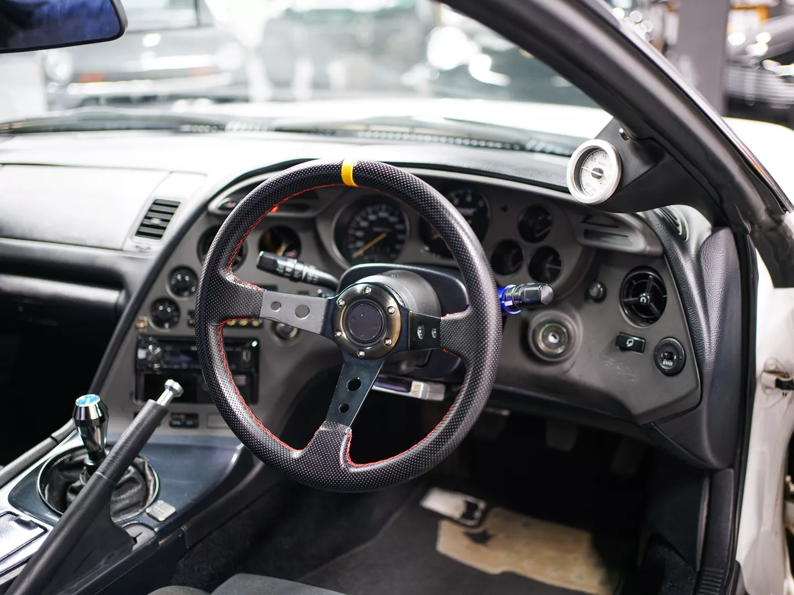

1997 Toyota Supra
- Power steering
- Power windows
- Power door locks
- Power adjustable front mirrors
- Hardtop
- Air conditioning
- Cloth upholstery
- Blitz coilovers
- HKS intake
- BBS wheels
- TRD carbon rear spoiler
- Aftermarket sideskirts
- Aftermarket steering wheel
- Front mount intercooler
- Apexi boost gauge
- Front strut bar
- Bride driver's seat
- Aftermarket shift knob
- Ridox front bumper
- “Trust” gauges
- Up for sale is this right hand drive 1997 Toyota Supra. This Supra is finished in white paint over gray cloth interior. Showing 198,467 kilometers (123,000 miles) on the odometer, this Supra is in good condition overall and is ready for its new home.
 







OE Equipment
Modifications
Description
Make:
Toyota
Model:
Toyota Supra
Year:
1997
Mileage:
198,467 kilometers
Price:
$42,000